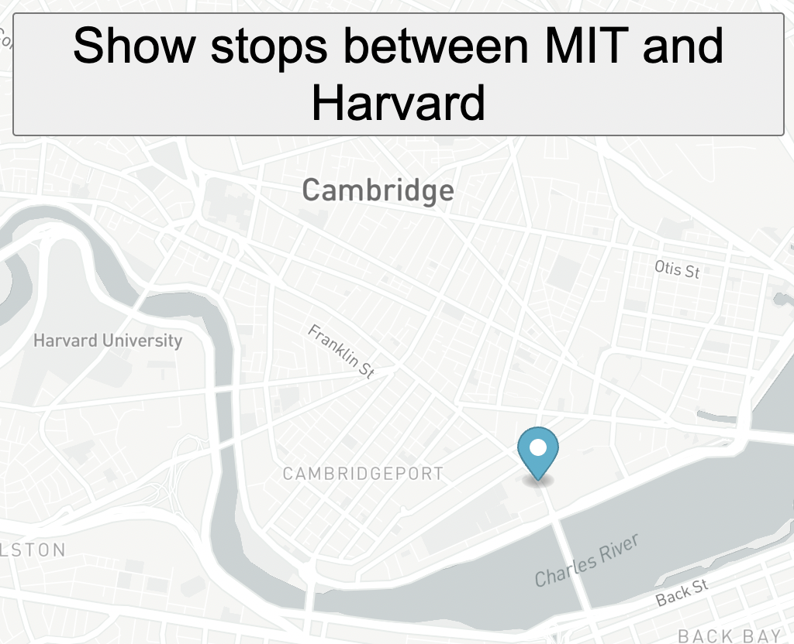

Projects

Pacmen: A "Make PacMan" button creates a new PacMan, while a "Start Game" button starts the PacMen moving and changing direction as they bounce off walls.
Pacmen

Bus Tracker: A marker was added to a map and moves to subsequent bus stops along a route.
Bus Tracker